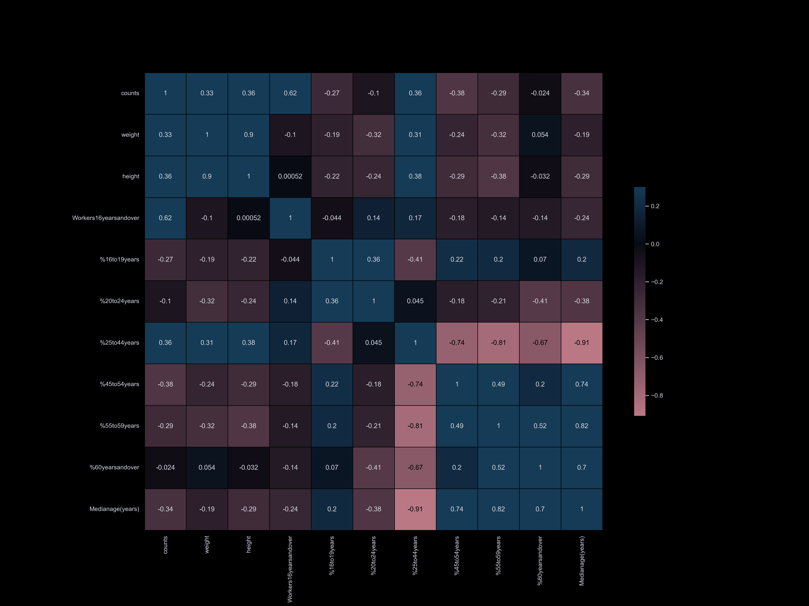

Visualizing Dogs in New York
Data Science
Final
Dec 2022
Title
Category
Assignment
Date
The project aims to analyze the relationship between social and
spatial factors and provide insight into the intangible
and physical organization of the city
through the perspective of dogs and their daily routines. It will explore socio-economic
indicators such as property values, neighborhood quality, proximity to open spaces
like parks, and walkability of the urban environment to visualize the city's spatial
characteristics.
it all started from here...
Our project is motivated by the prevalence of certain dog breeds in various neighborhoods in Cambridge and Boston,
and we seek to explore the correlation between dogs and socioeconomic factors such as income, work-life balance,
household size, and neighborhood quality. While we would ideally like to examine individual dog and owner characteristics,
ethical data inquiry practices prevent us from doing so, and data limitations make it impractical. Instead, we will use zip
code as a common feature in our data collection and analysis. To conduct our investigation, we have chosen New York City as
our research site due to the availability of comprehensive data on dogs, people, and neighborhoods, as well as its socioeconomic
stratification and spatial segregation. Additionally, New York City is renowned as a bustling metropolis, making it an ideal
location to investigate the relationship between dogs and urban living.

about the time series...
The time series plot reveals several patterns in the data on dog registrations.
Firstly, the number of registrations remains relatively stable with a slight upward
trend prior to the year 2020. Secondly, there are seasonal fluctuations within each year,
with registration numbers increasing until September before declining.
Finally, after the COVID-19 pandemic lockdown began in March 2020, registration
numbers began to grow at a much faster rate than before. This might be due to social
isolation and seeking comfort and companionship during the pandemic.
what happened to dog population...
Upon conducting an initial analysis of the data, we have discovered that Manhattan,
Brooklyn, and Queens have the highest number of registered dogs, whereas the Bronx
and Staten Island have notably fewer. Upon further investigation, we compared the number
of registered dogs to the population in each borough and found that while
the Bronx has a significantly lower number of registered dogs, it only has a
6% population difference compared to Manhattan (with a population of 1,471,160 in
the Bronx and 1,664,727 in Manhattan).
what are the correlations...
To visualize the correlation between our datasets and dog information,
we have categorized our datasets and compared them. Our correlation matrix
has enabled us to quickly understand our datasets and identify the main factors
that influence the dog population. We have found that factors such as park availability,
commute time, income, and household size have the strongest correlation with the number of registered dogs.
Our datasets are organized into the following categories:
- Age, race, sex, population, income, poverty
- Citizenship, language
- Occupation, worker status, time to go to work, commute time, college
- Housing, vehicle, household, park
 Age
Race
Income
Poverty
Occupation
Worker
Commute Time
College
Housing
Household
Vehicle
Park
looking at the map...
Upon examining the map, we have discovered that there is not a direct correlation
between the population of a given zip code region and the number of registered dogs
in that area. For instance, although Brooklyn is more densely populated than some other
areas, it has fewer registered dogs. This finding is not unexpected, given that zoning
and land use, as well as various socioeconomic factors, can differ across neighborhoods.
We plan to further explore these factors in our analysis. On the other hand, we have
found that the Manhattan region has a higher number of registered dogs, particularly
in neighborhoods near Central Park. It is worth noting that these areas tend to have
higher rent prices and shorter commute times.
From feature importance of Decision Tree, Gradient Boosting, we see several features that are
highly relevant to the dog counts in each Zip Code: Park Acres, Park Count, Population, Dog Number
what are the factors...
We have identified several factors that are strongly correlated with the number of registered dogs
in different neighborhoods of New York City. These factors include park acres, commute time, and median income.
Park Acres:
Parks are popular destinations for dog owners and their pets. As a result, areas with more parkland
tend to have higher numbers of registered dogs. Additionally, parks are often located near residential
areas and less frequently found in industrial areas.
Commute Time:
Workers in the Manhattan region have shorter commutes compared to workers in other boroughs, with an
average commute time of 32 minutes. Our analysis has shown that the number of registered dogs is
significantly higher in the area around Manhattan. This is likely due to the higher density of jobs
in Manhattan, as well as its association with higher socioeconomic status.
Median Income:
Owning a dog can be expensive, with costs ranging from food and medical expenses to emergency care and
property damage. Therefore, it is not surprising that there is a strong correlation between median income
and dog ownership. On average, workers in Manhattan have a median yearly income of $107,962, significantly
higher than workers in other boroughs. The Bronx has the lowest median income of all the boroughs, which may
explain why it has significantly fewer registered dogs than its population would suggest.

Rent
Click on the image to learn more
Data Science...
Our project aims to predict the number of dogs in each zip code based on various socio-economic factors.
The response variable is the dog count, while the predicting variables are based on the data overview
contents in each notebook
To create our model, we followed these steps:
To create our model, we started with a linear regression baseline model and added
lasso regularization to remove trivial features. Using cross-validation, we determined that
a degree of 1 was optimal for polynomial regression. Grid search was used to find the best
max_depth for a decision tree regressor and plot feature importance. We then used a bagging
regressor and gradient boosting, optimizing the latter with grid search. Our best model nested
an optimal gradient boost regressor within an Ada Boost regressor, achieving a test accuracy of 0.769.